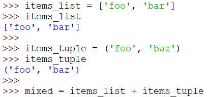
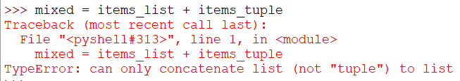
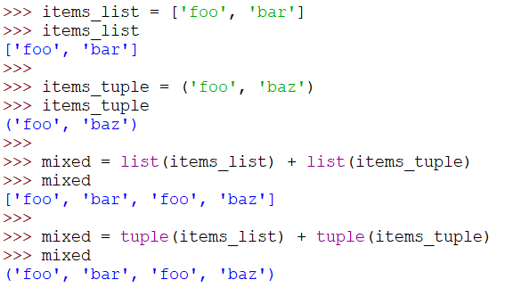
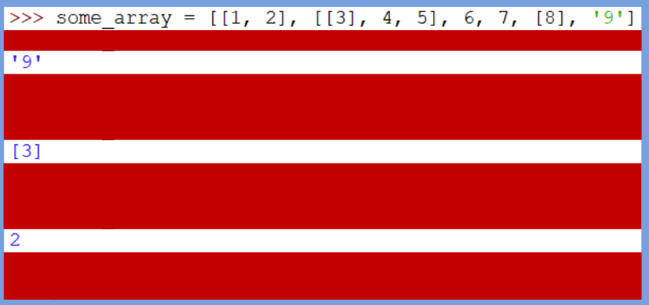
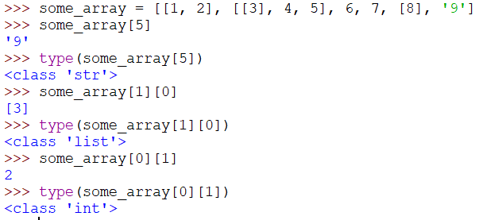

1
Сложить list и tuple
легко
Что произойдёт, если попытаться сложить список и кортеж? Проверь в редакторе.

Показать ответ (сначала попробуй сам!)

Учимся хранить много значений в одной переменной, доставать их по индексу и делать срезы.
Что произойдёт, если попытаться сложить список и кортеж? Проверь в редакторе.


Как исправить предыдущее выражение, чтобы всё работало?
Превратить кортеж в список можно функцией list(), а список в кортеж — tuple().

Исправь код, используя кортежи и списки: создай нужные переменные, чтобы история напечаталась без ошибок.
Сейчас программа останавливается с ошибкой NameError: Python не знает имён из фигурных скобок. Допиши переменные в начале программы и запусти её.
hero_name = 'Arthur'
princess_name = 'Morgana'
villain_name = 'Rakzul'
hero_actions = ('attack', 'defend')
villain_actions = ('attack', 'defend')
items = ['sword', 'shield']Значения можно выбрать свои. Важно, чтобы items был списком из двух предметов, а действия — кортежами из двух действий.
Как получить из списка следующие значения и какой будет у них тип?


Дан список shopping = ['хлеб', 'яблоки', 'сыр']. С помощью методов списка:
'молоко' в конец (append);'чай' в самое начало (insert);'хлеб' (remove);Ожидаемый вывод
['чай', 'яблоки', 'сыр', 'молоко'] 4
shopping = ['хлеб', 'яблоки', 'сыр']
shopping.append('молоко')
shopping.insert(0, 'чай')
shopping.remove('хлеб')
print(shopping)
print(len(shopping))Дан список nums = list(range(1, 11)). Используя только срезы, выведи:
Ожидаемый вывод
[1, 2, 3] [8, 9, 10] [1, 3, 5, 7, 9] [10, 9, 8, 7, 6, 5, 4, 3, 2, 1]
nums = list(range(1, 11)) print(nums[:3]) print(nums[-3:]) print(nums[::2]) print(nums[::-1])
Есть две переменные: a = 5 и b = 10. Поменяй их значения местами одной строкой с помощью распаковки кортежа и выведи print(a, b).
a = 5 b = 10 a, b = b, a print(a, b)
Дан список оценок marks = [5, 3, 4, 5, 2, 5]. Выведи:
count);sorted).Ожидаемый вывод
Пятёрок: 3 Макс: 5 Мин: 2 [2, 3, 4, 5, 5, 5]
marks = [5, 3, 4, 5, 2, 5]
print('Пятёрок:', marks.count(5))
print('Макс:', max(marks))
print('Мин:', min(marks))
print(sorted(marks))